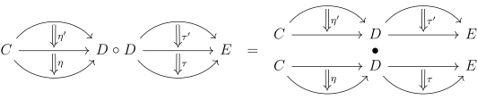

Let’s introduce the final essential categorical concept, the natural transformation. This is
an extremely important concept, I believe Mac Lane has said that he defined the notion of
category so that he could make precise a functor, and he defined a functor to make precise
the notion of a natural transformation.
Definition 1.1.Given two functors \(F\) and \(G\) from \(C\) to \(D\), a natural transformation \(\eta \)
from \(F\) to \(G\) is for each object \(x\) of \(C\), an arrow \(\eta _x\) from \(Fx\) to \(Gx\) such that the following diagramcommutes for all \(x,y,f\):
We write \(\eta : F \Rightarrow G\) to denote a natural transformation.
Natural transformation is a wonderful way of formalizing an intuitive sense of natural.
For example, if \(V\) is a vector space over a field \(F\), there is a dual vector space \(V^*\) which is the
vector space of linear maps from \(V\) to \(F\). Perhaps you know that if \(V\) is finite dimensional, it is
isomorphic to its dual. However these aren’t canonically isomorphic: in order to make an
isomorphism, you have to choose a basis and then identify them. Natural transformation
makes precise when this is canonical. For example, if \(\Vect _F\) is the category of F-vector spaces,
then \((-)^*\), the dual, is a contravariant functor from \(\Vect _F\) to itself. On arrows, \((-)^*\) does the same thing
as the \(\Hom \) functor \(C(-,F)\). We can compose \((-)^*\) with itself to get the covariant double dual
functor \((-)^{**}\). If \(f\) is a map from \(V\) to \(W\), then the double dual makes a map from \(V^{**}\) to \(W^{**}\) as
follows: given a map \(g\) that takes maps \(h\) from \(V\) to \(F\) to \(F\), we get the map \(f^{**}(g)\) that takes
maps \(k:V\to F\) to \(g(k\circ f)\). We can define a natural transformation \(\eta \) from \(1_{\Vect _F}\) to the double dual \((-)^{**}\):
given \(v \in V\), we send it to the element of \(V^{**}\) that takes an element of \(V^{*}\), and evaluates it
at \(v\). This is an isomorphism if the vector space is finite dimension, and note
that it is canonical: there was no need to make any choices. Then, we should
expect this collection of maps \(\eta _V, V \in \Vect _F\) to be a natural transformation. And indeed it is,
as one can check by following an element around the diagram that we want to
commute:
Lets follow around an element \(v \in V\):
Another example is the abelianization. Given a group \(G\), we can define a subgroup called
the commutator subgroup \([G,G] = \{aba^{-1}b^{-1}| a,b\in G\}\). The abelianization of \(G\) is the group \(G/[G,G]\). This is a functor as if \(f: G \to H\) is a
homomorphism, we can compose with the projection \(H \to H/[H,H]\) to get a map \(G \to H/[H,H]\). \([G,G]\) is in the kernel of
this map, so we get then a map \(G/[G,G] \to H/[H,H]\). This is the map that the abelianization sends \(f\) to. Now
the projection \(\pi _G: G \to G/[G,G]\) is a natural transformation as the diagram below commutes (by
definition):
As a third example, consider the category \(\omega \) which is the poset category of \(\NN \) with the usual
ordering. Consider a diagram consisting of a sequence of sets \(S_n\) with injective maps from \(S_n \to S_{n+1}\).
This can be thought of as a sequence of sets increasing in size (each containing the
previous). Recall that diagrams are just functors, and in this case, \(\omega \) is the category for
which this is a functor (we can call this functor \(F\). Let \(\widehat{\cup S_i}\) be the constant functor taking \(\omega \) to \(\cup S_i\),
and all the arrows to the identity. Then consider the natural transformation \(\eta : F \Rightarrow \widehat{\cup S_i}\) that sends
each \(S_i\) with the subset it corresponds to in the union. I leave this as an easy exercise
to check that this is a natural transformation (draw it!). This kind of natural
transformation is called a cocone (this will be discussed in more depth when we do
(co)limits).
Finally, consider the determinant of a (invertible) matrix, \(\det ^n\). I claim this is a natural
transformation. Consider the two functors from \(\CRing \) to \(\Grp \): one taking \(K\) to \(GL_n(K)\), and the other taking
it to \(K^*\) (check that these are functors). Then \(\det ^n_K\) is for each element of \(\CRing \) a map from \(GL_n(K)\) to \(K^*\)
sending a linear transformation to its determinant. The diagram is the same as
always:
Given two categories \(C, D\), we can form the product category, \(C\times D\) where the objects are
pairs of objects, the arrows are pairs of arrows, and composition is defined as
usual.
Now consider the contravariant powerset \(\Set (-,2)\) (2 is a set with two elements, we can view this
functor as \(2^{(-)}\)). As an exercise, try to find all the natural transformations from this functor to
itself (this will come up again in a later lecture).
Definition 1.2.Suppose \(F,G,H\) are functors in \(\Cat (C,D)\). Then if \(\eta :F \Rightarrow G\) and \(\nu :G \Rightarrow H\) are natural transformations,then we can form the vertical composite, \(\nu \cdot \eta \), a natural transformation from \(F\) to \(H\),defined by \(\nu \cdot \eta _a = \nu _a \circ \eta _a\).
We can check this is a natural transformation via the following diagram:
This turns \(\Cat (C,D)\) into a category, which we call the functor category. We can write this as \(D^C\).
An isomorphism in \(\Cat (C,D)\) is called a natural isomorphism. Alternatively, it is a natural
transformation \(\eta \) where each \(\eta _a\) is an isomorphism.
I use the word vertical composite, because there is also a horizontal composite. It can be
seen as follows:
Given the diagram below, we would like to create a natural transformation \(\nu \eta : F' \circ F \Rightarrow G' \circ G\) sometimes
written \(\nu \circ \eta \).
We can do this by considering the following diagram:
This commutes as \(\nu \) is natural for \(\eta _a\). This suggests the following definition:
Definition 1.3.Suppose \(F,G,F',G',\eta ,\nu \) are as above, we can form the horizontal composite \(\nu \eta :F' \circ F \to G'\circ G\)
so that \((\nu \eta )_a = \nu _{Ga} \circ F'\eta _a = G'\eta _a \circ \nu _{Fa}\).
It remains to check this is a natural transformation, but this should be obvious if you
draw the appropriate diagram (for a natural transformation). If \(F: C \to D\), \(G,H: D \to E\) are functors and \(\eta : G \Rightarrow H\) a
natural transformation then the natural transformation \(\eta F\) denotes the horizontal composite
\(\eta 1_F\), and similarly if \(J: E \to X\) is a functor, then \(J\eta \) denotes \(1_J\eta \).
Horizontal composites and vertical composites are related through the interchange law,
which says \((\tau \eta )\cdot (\tau '\eta ')=(\tau \cdot \tau ')(\eta \cdot \eta ')\). It can be described as the diagram below:

We can prove it using the diagram below. Let \(\eta ': F \Rightarrow G, \eta : G \Rightarrow H, \tau ': F' \Rightarrow G', \tau : G' \Rightarrow H'\) in the figure above.
The path on the top is the natural transformation \((\tau \cdot \tau ')(\eta \cdot \eta ')\), and the path on the bottom is \((\tau \eta )\cdot (\tau '\eta ')\). The
middle rectangle commutes as \(\tau '\) is a natural transformation.
As a final note, there is an analogy between natural transformations and homotopies.
If \(X\) and \(Y\) are topological spaces, and \(f\) and \(g\) are maps (continuous, as always) from \(X\) to \(Y\), a
homotopy from \(f\) to \(g\) is a map from \(X \times [0,1]\) to \(Y\) that at \(0\) restricts to \(f\) and at \(1\) restricts to \(g\). The
definition of a natural transformation can be presented analogously: Let \(2\) be the category
with \(2\) objects, called \(0\) and \(1\) and one non identity arrow from 0 to 1 (we can say the arrow
category, as this is the category that represents the diagram consisting of a generic
arrow).
If \(C\) and \(D\) are categories, and \(F\) and \(G\) are functors from \(C\) to \(D\), a natural transformation is a
functor from \(F\) to \(G\) is a functor from \(C\times 2\) to \(D\) that on \(0\) restricts to \(F\) and on \(1\) restricts to
\(G\).
Check that these two definitions of natural transformations are equivalent and note the
similarity with homotopies. In a way, a natural transformation is categorification of
homotopy.
Finally let’s end with an interesting non-example. Let \(\FinSet _g\) be the category of finite sets and
bijections between them. Consider two functors to Set, the first, \(\Aut \), takes \(X\) to the set
of bijections from \(X\) to itself, on maps, it takes \(f: X \to Y\) to the function that takes \(\phi :X \to X\) to \(f \circ \phi \circ f^{-1}: Y \to Y\).
The second, \(\Ord \), takes \(X\) to the set of total orders on \(X\), and on maps takes \(f\) to the
total order on \(Y\) induced by the bijection. These two functors send isomorphic
objects to isomorphic sets, but are not naturally isomorphic: in fact, there isn’t
even a natural transformation between them! For, let’s consider \(f\), the nontrivial
bijection from a set \(\{a,b\}\) to itself. If there was a natural transformation, we would
have
\(\Aut (f)\)is the identity, but \(Ff\) is not, so this diagram cannot commute.
The fact that this bijection is not natural has an interesting interpretation in the
context of a combinatorics problem. In particular, let’s count the number of trees on a set
of \(n\) elements, which we’ll call \(T_n\). Let \(|\cdot |\) denote cardinality of a set. Consider the
product \(T_n \times n \times n\), consisting of a tree on the set \(n\), as well as a head and a tail (shown in Fig
2).
Figure 1:A tree, on 11 elements, with a skeleton, indicated by the bold lines, is
determined by the total ordering on the skeleton and the trees coming out of each
point on the skeleton.
Note that since there is a unique path between any two points in a tree, we can draw
an arrow from the tail to the head, yielding a total ordering on a subset of 1
to n, ie. a skeleton, as well as trees coming out of each point. Note that the
skeleton and the trees coming out of each point completely determine \(T_n \times n \times n\). Then
as total orders are in bijections with permutations, we can consider the set of
permutations with trees coming out of them, a typical example in the figure
below:
Figure 2:A permutation on 2, 3, and 5 with trees coming out of it.
These are in bijection with functions from the set of n elements to itself, as a function
determines such a tree by writing where everything goes, which eventually (after applying
the function enough times) determines the cycles and the trees coming out of them. Thus \(T_n \times n \times n\)
is in bijection with the set of functions from \(\{1,... ,n\}\) to itself, which is \(n^n\). Thus \(|T_n| = n^{n-2}\) (This is known as
Cayley’s Theorem). Perhaps the reason this proof does something nontrivial is because it
used this bijection which was unnatural.